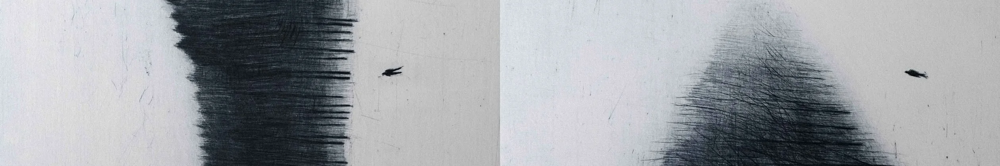

independent portfolio / vol. 01
Buna
Draga.
Web developer / digital artist / student.
Based in Prishtina, Kosovo.
A collection of things I build, study and experiment with.
scroll to exploreAbout
me
Finding the interesting parts
of unfamiliar things.
I'm Buna, an IT student from Prishtina, Kosovo.
I spend much of my time learning software, trying out programming languages, and building projects that help me understand the systems behind their interfaces.
My interests move between software engineering, Linux, automation, electronics and creative work. I enjoy exploring all things technology has to offer so i can find my feild of work
Currently
doing
Taking things slow right now so i can make some room to learn
I'm focusing on smaller personal projects while prioritizing high school and spending more time with books.

My
experience!
Hands-on work in software development, web design, networking and electronics. Mostly learned through making, breaking and fixing things.
- C#
- Python
- Java
- JavaScript
- HTML & CSS
- SQL
- Linux
- Git & GitHub
- VS Code
- MySQL
- .NET
- Automation
- Networking
- Electronics
- Circuit design
- Blender
Contact
me
Have something in mind?
I'm open to collaborations.
Find me elsewhere on the internet!!!
Discord username is copied when clicked.